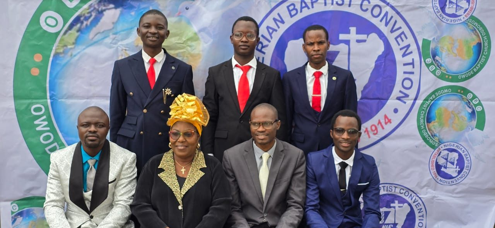
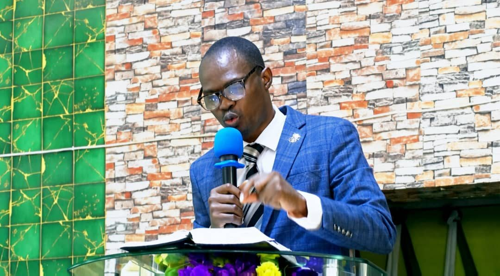

Home / About Us
About Us
How we began.
Owode Baptist Church began on October 7, 2001, through the initiative of Saja Baptist Church, Ogbomoso. A committee was formed to establish a church that would serve the people of Owode and surrounding communities, while advancing the Great Commission.
The first worship meeting was held at the residence of the late Deacon S. A. Adegboye. In January 2002, the church moved to its present location.
- October 7, 2001The church begins, through the initiative of Saja Baptist Church, Ogbomoso.
- First worship meetingHeld at the residence of the late Deacon S. A. Adegboye.
- January 2002The church moves to its present location.
- April 1, 2022Rev. Oyeyemi Josiah Oyekan begins serving as pastor.
By God’s grace, we have grown.
The church began with 52 members and has grown to over 1,000 members. Through God’s grace, Owode Baptist Church has developed its worship facilities, established ministries and departments, ordained three sets of deacons, and contributed to mission work in and beyond its community.
“To be a Glorious Church where through Christ lives are transformed and community is impacted by the unrestricted power of the Holy Spirit.”
“Modeling a Glorious Church through the execution of the Great Commission, caring for one another and faithfulness to Christ and our Convention, while creating an atmosphere for spiritual and physical transformation and unrestricted impact of the Holy Spirit in the lives of the worshippers and our community.”
Growing in Faith, Serving in Love
We are committed to growing into the likeness of Christ, obeying the Word of God, building a loving church community, and serving the world around us.


Rev. Oyeyemi Josiah Oyekan
Rev. Oyeyemi Josiah Oyekan has served as the pastor of Owode Baptist Church since April 1, 2022. Under his pastoral leadership, the church continues its commitment to worship, discipleship, evangelism, and community impact.
Further biography details can be added once supplied by the church.
Contact the pastorA warm welcome is waiting.
Plan a visit, find a ministry or simply start a conversation with us.
Contact Us